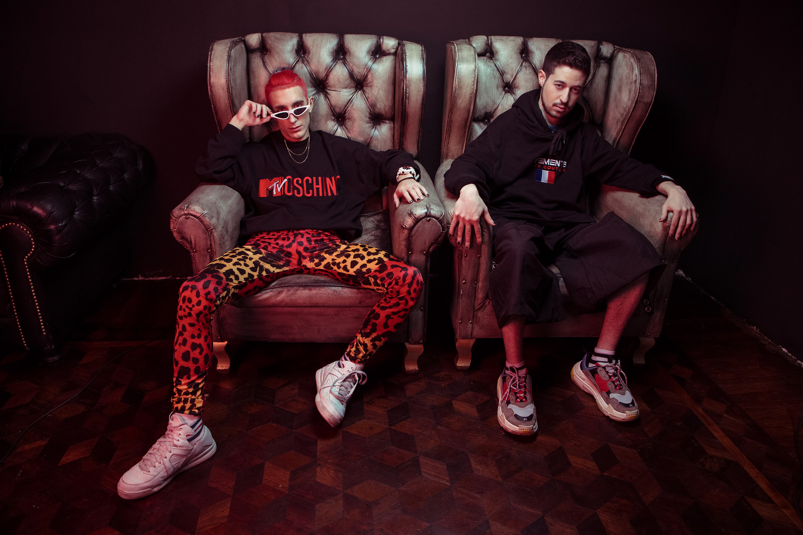
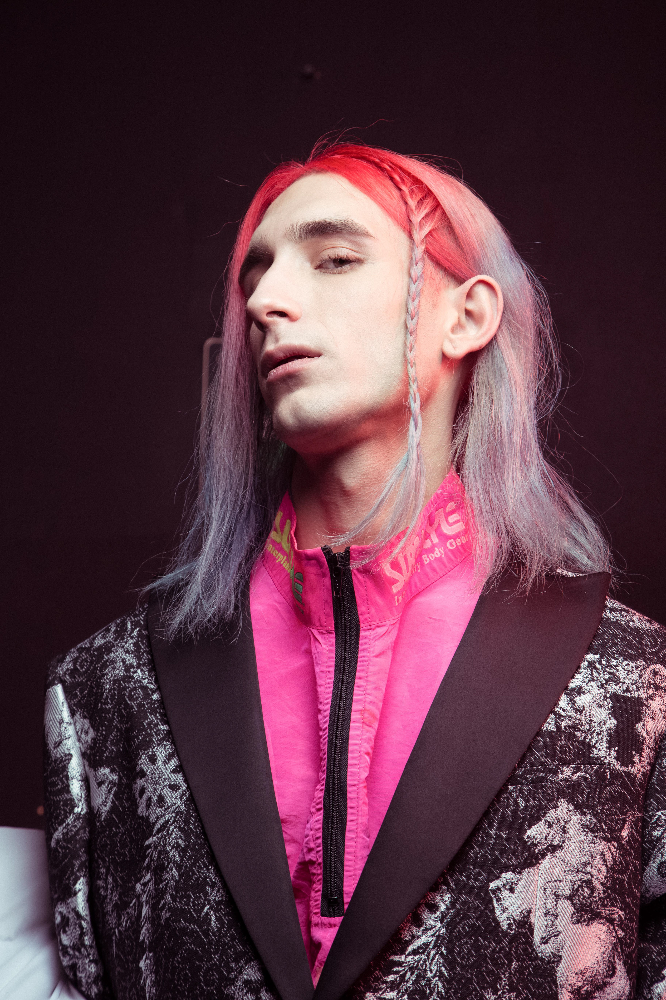
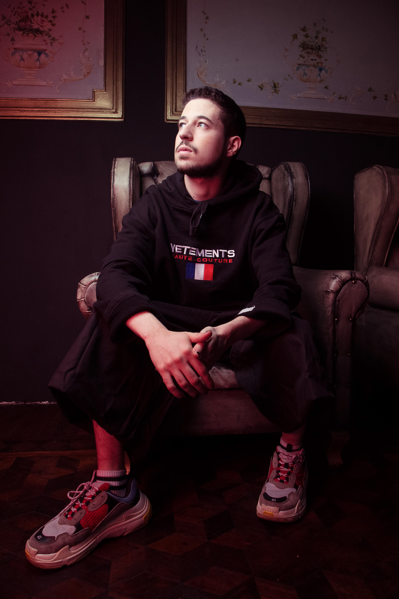
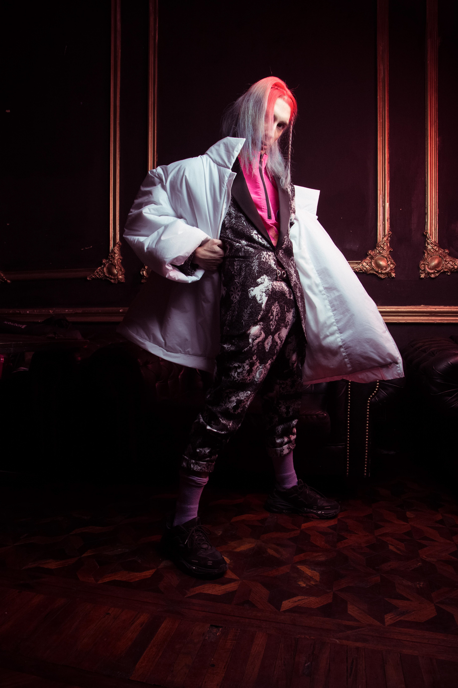
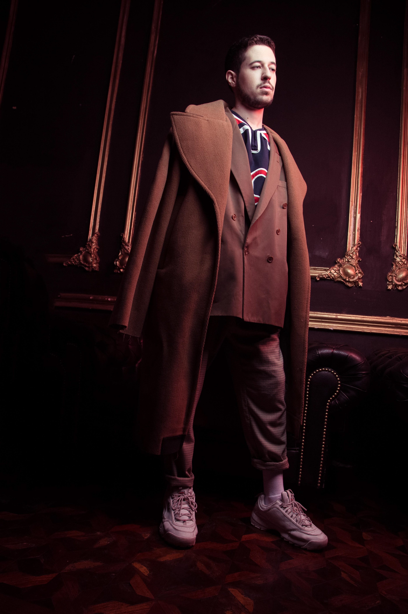
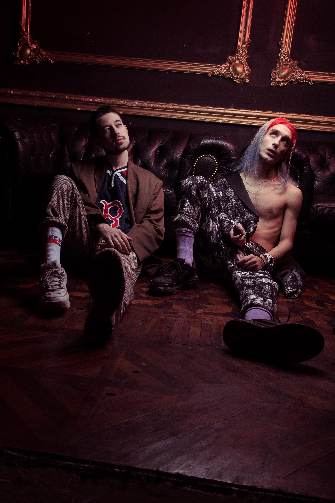
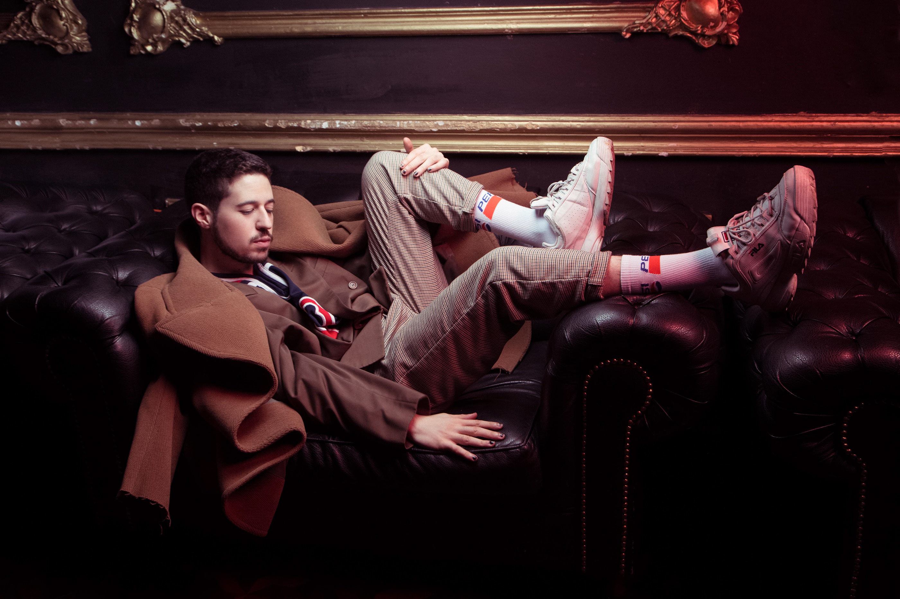

Pedro Ladroga & $kyhook Launch Photoshoot by Milo Miranda. Puebla, MX
This photoshoot was conceived to introduce Pedro Ladroga and $kyhook to the wider music and cultural landscape, crafting a visual identity that would resonate across magazines, social media, flyers, Spotify, and press features. Capturing their raw personality and charisma, the images were designed to position them as both authentic and approachable, while aligning with contemporary fashion trends through the use of designer garments. The shoot’s impact was immediate, with features in Red Bull Magazine, Marvin Magazine, Kaltblut Magazine, and Ello.co, as well as prominent appearances in the flyer for Sonar 2019 and the Jägermeister Festival, solidifying their presence as rising, trend-savvy artists in the global scene.






